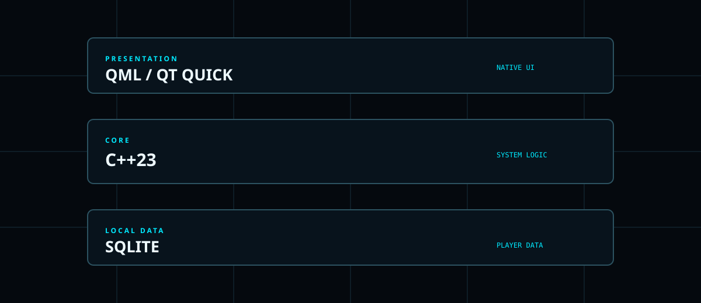
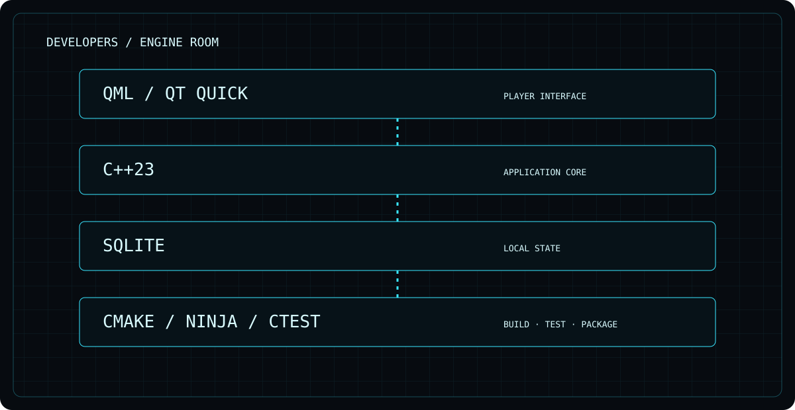

Layers with jobs.

QML/Qt Quick presents the product, C++23 owns application logic and SQLite provides local persistence. CMake/Ninja and CTest support the build and test loop.
VoidOne is a native application project. This section is for people who want to understand the stack, build it, inspect the CI and contribute without digging through marketing pages.


QML/Qt Quick presents the product, C++23 owns application logic and SQLite provides local persistence. CMake/Ninja and CTest support the build and test loop.
Keep the website as the map; keep the repository as the source of truth.
That is what open source is for.